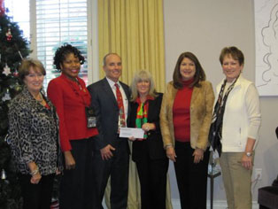

Cedar Creek Veterans Foundation
The CCVF has been established to raise monies to assist with the physical and emotional recovery and rehabilitation of wounded, injured and disabled military personnel and veterans with a focus on those individuals residing in and organizations serving the Northeast Texas region. The foundation’s principal fundraising activity is the Thunder Over Cedar Creek Lake air show presented at dusk on the Saturday evening, closest to the July 4th Holiday timeframe each year. The CCVF is a non-profit 501(c)(3) organization. Your donation is tax-deductible as allowed by law.
 Press Releases
Press Releases
FISHER HOUSE:
PRESS RELEASE

On ------,, four board members of the Cedar Creek Veterans Foundation (CCVF) attended a meeting with the founders and leadership group at The Fisher House in Dallas, Texas. The Foundation was represented by Patty Evans, President, and Board Members Jennifer Ball, Garrett Engle and Phil Becker. Also present for the luncheon were the founders General Robert Carey and Dick Agnew, staff members Lydia Henderson (Director of Fisher House) and doctors and staff from the Veterans Hospital. The Cedar Creek Veterans Foundation presented a check of $12,000 to Lydia Henderson; this means that the Foundation has presented to this wonderful organization over $72,000 in the past five years.
One of the most benificial organizations that is supported by the CCVF is the Fisher House, located next door to the Veterans Hospital in Dallas Texas. In order to use the Fisher House, you have to be a veteran and your residence must be more than 60 miles from the hospital. The Fisher House provides a safe, convenient and comfortable place for our East Texas veterans, serving military and their families as they receive treatment. Fisher House opened its doors in 2009 and has provided housing for 1,583 families, 17 active duty families, 17 combat war veterans, 291 seniors, 1048 adults and 114 children with an average stay of 8 days. Many of these families would have been unable to afford to be with their loved ones as they recovered from wounds or received treatment before the Fisher House was built. The funds that were presented will be used to supply food, linens, travel money and many other services that enhance the ability of the Fisher House to provide a home away from home for the families of our nation’s hospitalized heroes. It is the goal of the Fisher House Trust to have a Fisher House located at every veterans and military hospital in the United States.
________________________________________________________________________________________________________________
Navy-Marine Corps Relief SOCIETY:
PRESS RELEASE

The Cedar Creek Veterans Foundation presented another check in support of the Relief Society from the 2014 Thunder Over Cedar Creek Air Show in the amount of $2,000 to Sharon Zacharias, Director of the Navy-Marine Corps Relief Society, and Captain Gilbert Miller, 10th Air Force, 301 Fighter Wing, at the Naval Air Station - Joint Reserve Base in Fort Worth in early December, 2014. Presenting the check, from the left, are Mr. Colyn Berry, Retired Military, CCVF Board Member; Mr. Garrett Engle, Retired Military and the presenter, Mrs. Patty Evans, CCVF Co-President.
The donation is the third such presentation given to the non-profit by the Foundation, part of the proceeds from the Thunder Over Cedar Creek Lake Air Show held on the week end closed to July 4th and other fundraising events during the year. The Navy-Marine Corps Relief Society is a more than 100 year old private non-profit which supports unmet needs of military and veterans of those services and their eligible family members and survivors. In addition to assistance with medical needs such as its Combat Casualty Assistance Visiting Nurse Program, the Society provides financial and educational resources including loans and counseling to enable the Navy and Marine Corps families to achieve financial self-sufficiency and to meet emergency needs. The Society enjoys significant assistance from military commanders and other military personnel and offices are generally located at Navy or Marine Corps facilities such as the Naval Air Station - Joint Reserve Base in Fort Worth.
The Cedar Creek Veterans Foundation was established in 2009 by some residents of the Pinnacle Club in Mabank on Cedar Creek Lake to raise money for well-established non-profits providing support services to military and veterans and their families particularly those from East Texas who were injured in combat operations in Afghanistan and Iraq. Please see the Press Release below for the details on the Foundation. The tab for the "Schedule" highlights the activities to be sponsored by the Cedar Creek Veterans Foundation. See below for the other organizations that are recipients of the proceeds from the Golf Classic and the Air Show, with the thanks for and the support of the very active attendees each year.
HOPE FOR THE WARRIORS:
PRESS RELEASE

The Cedar Creek Veterans Foundation presented another check in support of the HOPE FOR THE WARRIORS from the 2014 Thunder Over Cedar Creek Air Show in the amount of $2,000 to Ann Barnwell, director and Captain Gilbert Miller, 10th Air Force, 301 Fighter Wing, at the Naval Air Station - Joint Reserve Base in Fort Worth.Presenting the check, from the left, are Mr. Colyn Berry, Retired Military, CCVF Board Member; Mr. Garrett Engle, Retired Military and the presenter, Mrs. Patty Evans, CCVF Co-President.
The donation is the fourth such presentation given to the non-profit by the Foundation, part of the proceeds from the Thunder Over Cedar Creek Lake Air Show held on the week end closed to July 4th and other fundraising events during the year. The mission of hope for the warriors is to enhance the quality of the life for post 9-11 Service Members, their families and the families of the fallen. It is in the service of the physical and psychological wounds in the line of duty or as a result of that duty. Hope for the Warriors is dedicated to restoring the sense of self, the family unit and restoring hope for our service members and the military families.
The PRograms for career transition and further education opportunities, Clinical Health and Wellness, with assistance for Community and Military relations, enjoy significant assistance from military commanders and other military personnel and offices are generally located at facilities; such as the Naval Air Station - Joint Reserve Base in Fort Worth.
CEDAR CREEK VETERANS FOUNDATION:
PRESS RELEASE

The Cedar Creek Veterans Foundation was established in 2009 by some residents of the Pinnacle Club in Mabank, Texas on Cedar Creek Lake to raise money for well-established non-profits providing support services to military and veterans and their families particularly those from East Texas who were injured in combat operations in Afghanistan and Iraq. The signature event of the Foundation is the Thunder Over Cedar Creek Lake Air Show over 4th of July weekend which was viewed by over 50,000 people. The air show was started several years ago by Board member and MiG-17 owner and pilot Randy Ball and is one of very few shows performed over water. In addition to the MiG–17, prior shows have featured an Air Force F-16 demonstration team, C–17, the Tora Tora Tora group, C–130, an L-29, a B-52 bomber, three of only about a dozen B-25’s still flying and many others.
The Director of the Air Show is Randy Ball, a 6th generation Texan and the grand son of a World War II B-17 bomber pilot. Randy has over 30 years as a pilot and still works as an Airline Captain. With over 24 years of experience in air shows, he has flown in over 1,000 performances. His 1,000 hours of time piloting a Russian Jet Fighter has been recognized as he has a Level I Jet Aerobatic Day and Night rating; the ONLY JET FIGHTER PILOT IN NORTH AMERICA. As Director, Randy works to get the performers sequenced in the Air Show to provide the thrills and excitement that has been the corner stones of this event since the beginning
During 2015, the Cedar Creek Veterans Foundation will once again have three events to support the three Armed Forces Veterans charity organizations that the proceeds are distributed to; the The Fisher House, Hope for the Warriors, and the Navy and Marine Corp Relief Society. In addition, the Foundation will also provide financial support to the Payne Spring Fire Rescue for their stand-by emergency services during the Air Show. Since the initial Air Show, the Foundation has provided almost $100,000 to these organizations to provide for Veterans and their familes.
The first event will be the Cedar Creek Veterans Foundation Golf Classic. This will be conducted at the Pinnacle Golf Club in Payne Springs on Monday June 8, 2015. The profits from the tournament will benefit all three charities and will give the towns, local businesses and communities a chance to support our veterans and troops. We are very honored that George P. Bush will be attending our Classic. Come out and support our special guests, several soldiers from Brooke Army Medical Center who are recovering or who have recovered from injuries received in the service to their country. We’ll be honoring local veterans and military for their service to our country. You can contact Gayle Robinson at 903- 451-5054 if you are interested in playing in the golf tournament or becoming a sponsor.
The second event will be the Cedar Creek Veterans Foundation Pilot's Party, to be held on Friday, July 3, 2015. This social hour and dinner is held to have our performers available for interaction with residents and supporters of the CCVF. There will be opportunities to have photographs taken with the pilots and their supporting teams as well as special entertainment focus on the activities of the third event.
Our annual Air Show, “ Thunder Over Cedar Creek Lake”, is the third event that will be held on Saturday July 4th, 2015. We expect to have an even more exciting Air Show than last year. Most of the pilots who fly in our show donate their fees in order for us to provide more money for the military charities we support. We’ve spent a great deal of time making sure that the money we donate gets to the people it’s intended to benefit. Randy Ball, who is the Air Show founder and pilots our premier military aircraft, a MiG 17 fighter, works very hard to make this a thrilling, dynamic event for the Cedar Creek Lake area. He is shown in the flight suit in the group photograph above. We are now the 4th largest air show in the southwest and the only one over water! If you are interested in helping or being a sponsor you can contact Gayle Robinson 903-451-5054 or Patty Evans 903-451-1020.
Over 47,000 men and women have been wounded in armed conflicts around the globe since 2001. A lot of them will need continuing medical treatment throughout their life. The Cedar Creek Veterans Foundation is dedicated to helping make these soldiers and their family’s lives a little easier. If you would like to help, you can go to ccveteransfoundation.org and make an on line donation. Cedar Creek Veterans Foundation is a 501(C) (3) charity with an A+ rating.
Thunder Over Cedar Creek Lake Air Show is held annually on the July 4th Holiday Weekend and starts around 6:00 pm. and continues after dusk, when the after burners glow and the lake waters calm.